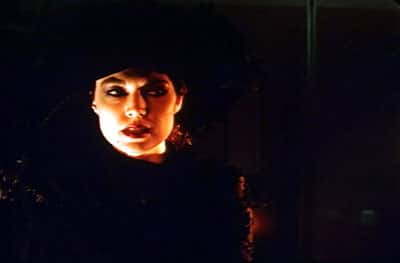

festivals and screenings

Eurydice (Trish) questions Orpheus.
World Premiere
Friday November 16th 2001 — 10pm
Hope Street Theatre,
11 Hope Street,
Brooklyn, NY 11211.
Manhattan Premiere
Friday November 30th 2001 — 7pm
New School University
Tishman Auditorium,
66 West 12th St. (between 5th and 6th Ave)
Konundrum Film Series
Saturday April 13th 2002, 5–7pm,
Collective Unconscious Theater
145 Ludlow St. btw Stanton and Rivington
(1.5 blocks below Houston)
konundrum.com
Please feel free to email me regarding L or other matters.